Investimenti
La Scheda “Piano degli Investimenti” sarà strutturata in sei differenti sezioni, accessibili o meno sulla base del ruolo del singolo utente e della fase del processo di predisposizione del piano degli investimenti:
- Indicazioni per la predisposizione del Piano degli Investimenti – Accessibile in modifica da parte del Direttore Generale ed in sola visualizzazione da parte degli altri utenti che accedono alla Scheda.
- Inserimento Richieste di Investimento – Accessibile per tutti i Responsabili dei CDR abilitati alla richiesta di investimenti (attualmente solo Dipartimenti).
- Parere Direzione di Riferimento – Visibile solo dai componenti della Direzione Strategica, riporta le richieste inserite nella sezione B per le aree di competenza.
- Istruttoria – Visibile al Direttore del Dip. Amministrativo, alle UOC “competenti” sulla base della tipologia di richiesta ed alla UOC Bilancio, Programmazione, Rendicontazione e Monitoraggio.
- Piano Investimenti – Accessibile al Direttore Generale in modifica e, a partire dalla convalida definitiva, accessibile in sola visualizzazione per tutti i responsabili dei CDR abilitati alla richiesta di investimenti.
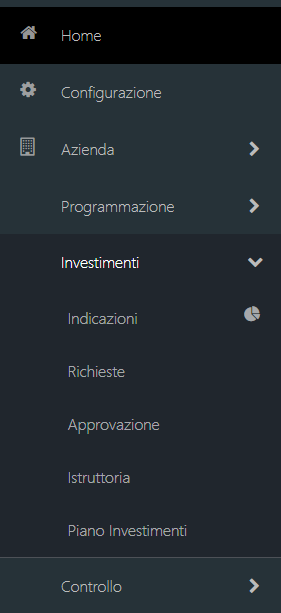
Gli utenti che accedono alla scheda “Piano degli Investimenti” avranno privilegi specifici sulla base del ruolo ricoperto all’interno delle fasi descritte nel seguente flusso di attività.

Si rappresentano di seguito le sezioni messe a disposizione delle diverse tipologie di utenti che accedono alla sezione "Investimenti".
Responsabile di CDR (Dipartimenti / UO di Staff / Direzioni)
Il Responsabile di CDR ((Dipartimenti / UO di Staff / Direzioni)) accedendo alla Scheda “Piano degli Investimenti” potrà:
- Consultare la sezione Indicazioni per la predisposizione del Piano degli Investimenti in sola lettura;
- Accedere alla sezione “Inserimento Richieste di Investimento” per:
- Inserire le richieste di investimenti secondo il format proposto dalla scheda di Richiesta Investimento;
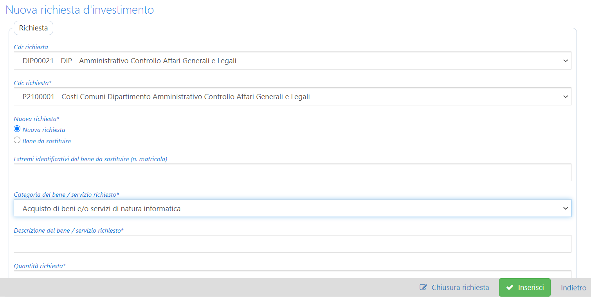
- Visualizzare in una tabella di sintesi le richieste inserite (all’interno della tabella dovrà essere visualizzato un contenuto minimale che identifichi la richiesta, la fase del processo ed eventuali ulteriori informazioni inerenti la decisione assunta dalla Direzione Strategica in merito alla richiesta inserita);
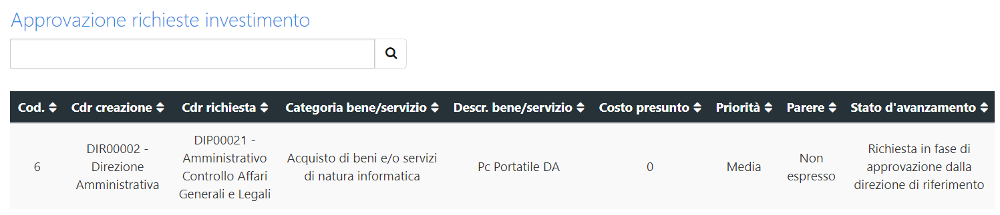
- Modificare o Eliminare le richieste già inserite;
- Evadere la scheda una volta concluso l’inserimento di tutte le richieste mediante un apposito pulsante di “Conferma Chiusura Richieste”;
- Accedere al dettaglio della singola richiesta effettuata che dovrà contenere le informazioni relative alla richiesta e quelle inserite nelle diverse fasi del processo (parere direzione, istruttoria UOC competenti, istruttoria UOC Bilancio, parere DG).
- Accedere alla sezione “Piano degli Investimenti” al fine di visualizzare le richieste contenute nel Piano degli Investimenti definitivo approvato dal Direttore Generale e le informazioni di monitoraggio inserite dalle UOC competenti.
Direttore Strategico di Riferimento
Il Direttore Strategico di Riferimento (Direttore Generale, Direttore Amministrativo, Direttore Sanitario, Direttore Sociosanitario) accedendo alla scheda “Piano degli Investimenti” potrà:
- Consultare la sezione Indicazioni per la predisposizione del Piano degli Investimenti in sola lettura;
- Accedere alla sezione “Inserimento Richieste di Investimento” per:
- Inserire le richieste di investimenti secondo il format proposto dalla scheda di Richiesta Investimento;
- Visualizzare in una tabella di sintesi le richieste inserite (all’interno della tabella dovrà essere visualizzato un contenuto minimale che identifichi la richiesta, la fase del processo ed eventuali ulteriori informazioni inerenti la decisione assunta dalla Direzione Strategica in merito alla richiesta inserita);
- Modificare o Eliminare le richieste già inserite;
- Evadere la scheda una volta concluso l’inserimento di tutte le richieste mediante un apposito pulsante di “Conferma Chiusura Richieste”;
- Accedere al dettaglio della singola richiesta effettuata che dovrà contenere le informazioni relative alla richiesta e quelle inserite nelle diverse fasi del processo (parere direzione, istruttoria UOC competenti, istruttoria UOC Bilancio, parere DG).
- Accedere alla sezione “Parere Direzione di Riferimento” al fine di:
- Visualizzare le richieste di investimento inserite e “Chiuse” dai CDR afferenti alla propria Direzione;
- Accedere al dettaglio della singola richiesta in consultazione;
- Compilare, per singola richiesta, l’area dedicata al Direttore Strategico di riferimento all’interno della quale dovrà inserire il proprio parere in termini di:
- Parere: SI’ / NO / Altro (con campo note testuale)
- Priorità: ALTA / MEDIA / BASSA
- Tempi: 1° Semestre / 2° Semestre
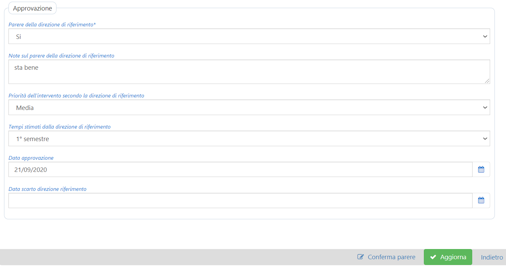
- Procedere con la “Validazione Finale del Direttore Strategico di Riferimento” dal fine di avviare la fase successiva.
- Accedere alla sezione “Piano degli Investimenti” al fine di visualizzare le richieste contenute nel Piano degli Investimenti definitivo approvato dal Direttore Generale e le informazioni di monitoraggio inserite dalle UOC competenti.
Direttore del Dipartimento Amministrativo
Il Direttore del Dip. Amministrativo, accedendo alla scheda “Piano degli Investimenti”, potrà:
- Consultare la sezione Indicazioni per la predisposizione del Piano degli Investimenti in sola lettura;
- Accedere alla sezione “Inserimento Richieste di Investimento” per:
- Inserire le richieste di investimenti secondo il format proposto dalla scheda di Richiesta Investimento);
- Visualizzare in una tabella di sintesi le richieste inserite (all’interno della tabella dovrà essere visualizzato un contenuto minimale che identifichi la richiesta, la fase del processo ed eventuali ulteriori informazioni inerenti la decisione assunta dalla Direzione Strategica in merito alla richiesta inserita);
- Modificare o Eliminare le richieste già inserite;
- Evadere la scheda una volta concluso l’inserimento di tutte le richieste mediante un apposito pulsante di “Conferma Chiusura Richieste”;
- Accedere al dettaglio della singola richiesta effettuata che dovrà contenere le informazioni relative alla richiesta e quelle inserite nelle diverse fasi del processo (parere direzione, istruttoria UOC competenti, istruttoria UOC Bilancio, parere DG).
- Accedere alla sezione “Istruttoria” al fine di:
- Visualizzare le richieste di investimento “Validate” dalle Direzioni Strategiche;
- Accedere al dettaglio della singola richiesta in consultazione;
- Confermare, per singola richiesta, la UOC Competente per l’effettuazione dell’istruttoria mediante un apposito menu a tendina precompilato sulla base del collegamento proposto nella seguente tabella tra “Categoria del bene / Servizio richiesto” (campo 8 della scheda di Richiesta Investimento) e UOC Competente.
- Procedere con l’ “Avvio Istruttoria UOC Competenti” mediante apposito tasto.
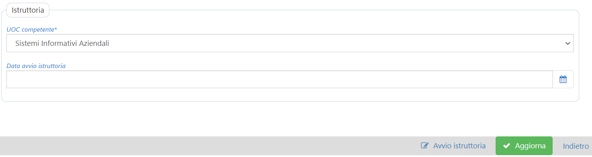
- Una volta conclusa l’istruttoria delle UOC Competenti (fase 6) il Direttore del Dip. Amministrativo visualizzerà il cambio di “Stato” della richiesta all’interno della sezione “Istruttoria” visualizzando “Verifica Copertura” (fase 7).
- Una volta conclusa la fase di “Verifica Copertura” da parte della UOC Bilancio (fase 8) il Direttore del Dip. Amministrativo provvederà a “Validare la Proposta di Piano Investimenti” provvedendo anche ad allegare apposita relazione di accompagnamento (verificare la possibilità di creare un format di relazione di accompagnamento)
- Accedere alla sezione “Piano degli Investimenti” al fine di visualizzare le richieste contenute nel Piano degli Investimenti definitivo approvato dal Direttore Generale e le informazioni di monitoraggio inserite dalle UOC competenti.
| CATEGORIA RICHIESTA | UOC COMPETENTE |
|---|---|
| lavori e/o interventi di manutenzione straordinaria | UOC Gestione del Patrimonio e Progetti di Investimento |
| acquisto di beni e/o servizi di natura informatica | UOC Sistemi Informativi Aziendali |
| acquisto generico di beni e/o servizi di natura NON informatica | UOC Gestione Contratti e Monitoraggio Spesa |
Responsabile di UOC Competente per tipologia di richiesta
I Responsabili delle UOC individuate quali competenti per l’effettuazione dell’istruttoria accedono alla scheda “Piano degli Investimenti” e potranno:
- Accedere alla Scheda “Istruttoria”, all’interno della quale saranno riportate le richieste per le quali il Direttore del Dip. Amministrativo ha avviato la fase di Istruttoria. Tali UOC quindi saranno chiamate all’effettuazione della suddetta istruttoria, che dovrà essere formalizzata mediante la compilazione delle seguenti informazioni:
- Costo presunto (€)
- Modalità di acquisizione (selezione da menu a tendina)
- Tempi (1° Semestre / 2° Semestre)
- Anno soddisfacimento richiesta
- Fonte di finanziamento proposta
- Categoria Registro Cespiti Proposta
- Non coerente con il piano investimenti (con motivazioni)
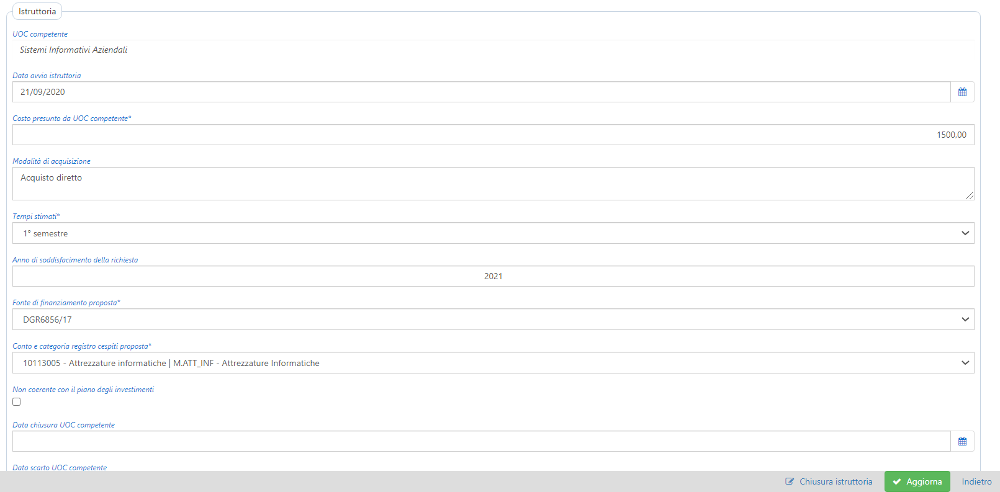
- Una volta inserite le informazioni per ciascuna richiesta la UOC procederà con la “chiusura istruttoria UOC competente”. Successivamente accederà alla sezione “Piano degli Investimenti” al fine di visualizzare le richieste contenute nel Piano degli Investimenti definitivo approvato dal Direttore Generale e procedere al monitoraggio periodico dell’attuazione del Piano mediante la compilazione delle seguenti informazioni (per ciascuna richiesta):
- Fatto (Sì / No)
- Importo definitivo
- Data
- Provvedimento
- Fatture
- Fornitore
- Fonte di finanziamento
- Note
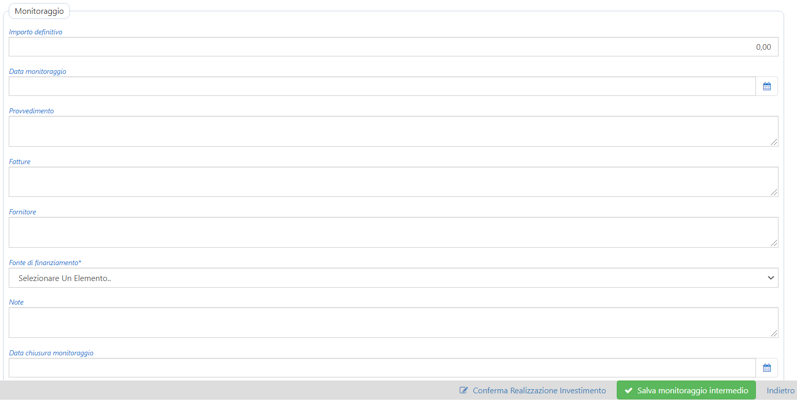
Responsabile della UOC Bilancio, Programmazione, Rendicontazione e Monitoraggio
Il Responsabile della UOC Bilancio, Programmazione, Rendicontazione accede alla scheda “Piano degli Investimenti” e potrà visualizzare unicamente la Scheda “Istruttoria”, all’interno della quale saranno riportate le richieste per le quali il Direttore del Dip. Amministrativo ha avviato la fase di “Verifica Copertura”.
La UOC sarà quindi chiamata ad effettuare le opportune verifiche circa la copertura della spesa per investimenti prevista dalla UOC competente inserendo per ciascuna richiesta le seguenti informazioni:
- Categoria Registro Cespiti
- Conto di Stato Patrimoniale
- Ammontare del conto derivante dal Bilancio Aziendale (€)
- Fonte di finanziamento
Una volta inserite le informazioni per ciascuna richiesta la UOC procederà con la “chiusura verifica copertura”.
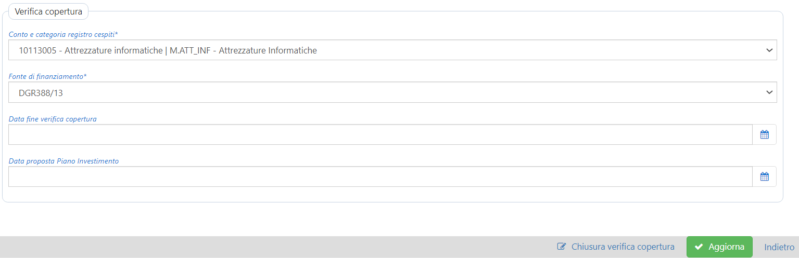
Direttore Generale
Il Direttore Generale accedendo alla scheda “Piano degli Investimenti” potrà:
- Visualizzare la sezione “Indicazioni per la predisposizione del Piano Investimenti” in modalità di compilazione e modifica dei contenuti. Una volta effettuata la compilazione delle indicazioni procederà alla pubblicazione delle Indicazioni definitive che, da questo momento, risulteranno visibili anche dagli altri Responsabili di CDR e Direttori (verificare la possibilità di creare un format per la predisposizione delle Indicazioni).
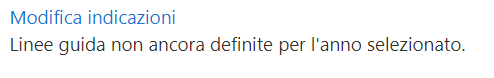
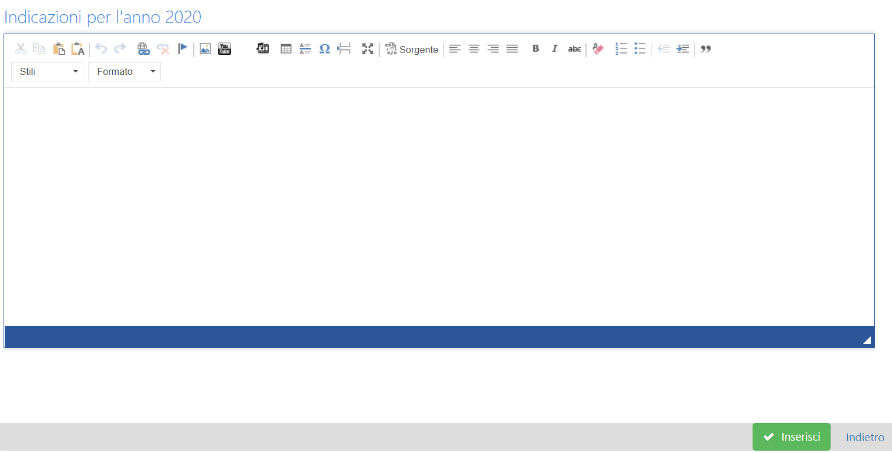
- Accedere alla sezione “Inserimento Richieste di Investimento” per:
- Inserire le richieste di investimenti secondo il format proposto dalla scheda di Richiesta Investimento;
- Visualizzare in una tabella di sintesi le richieste inserite (all’interno della tabella dovrà essere visualizzato un contenuto minimale che identifichi la richiesta, la fase del processo ed eventuali ulteriori informazioni inerenti la decisione assunta dalla Direzione Strategica in merito alla richiesta inserita);
- Modificare o Eliminare le richieste già inserite;
- Evadere la scheda una volta concluso l’inserimento di tutte le richieste mediante un apposito pulsante di “Conferma Chiusura Richieste”;
- Accedere al dettaglio della singola richiesta effettuata che dovrà contenere le informazioni relative alla richiesta e quelle inserite nelle diverse fasi del processo (parere direzione, istruttoria UOC competenti, istruttoria UOC Bilancio, parere DG).
- Accedere alla sezione “Parere Direzione di Riferimento” al fine di:
- Visualizzare le richieste di investimento inserite e “Chiuse” dai CDR afferenti alla propria Direzione;
- Accedere al dettaglio della singola richiesta in consultazione;
- Compilare, per singola richiesta, l’area dedicata al Direttore Strategico di riferimento all’interno della quale dovrà inserire il proprio parere in termini di:
- Parere: SI’ / NO / Altro (con campo note testuale)
- Priorità: ALTA / MEDIA / BASSA
- Tempi: 1° Semestre / 2° Semestre
- Procedere con la “Validazione Finale del Direttore Strategico di Riferimento” dal fine di avviare la fase successiva.
- Accedere alla sezione “Piano degli Investimenti” al fine di:
- Visualizzare le richieste contenute nella “Proposta Piano degli Investimenti” e la relazione di accompagnamento inviate dal Direttore del Dip. Amministrativo.
- Per ciascuna richiesta potrà eventualmente inserire un “Parere DG” mediante l’utilizzo dei seguenti campi:
- Parere DG: SI’ / NO / Altro (con campo note testuale)
- Priorità DG: ALTA / MEDIA / BASSA
- Tempi DG: 1° Semestre / 2° Semestre
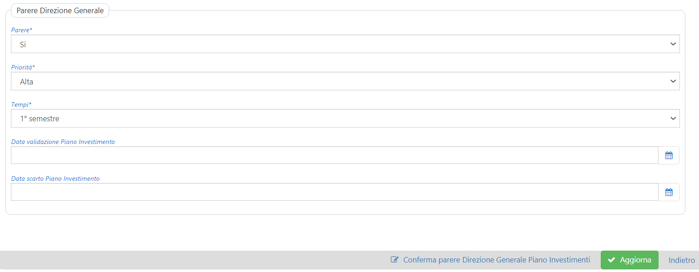
- Una volta compilati i campi necessari il Direttore Generale procederà alla “Generazione Piano degli Investimenti” definitivo mediante un apposito tasto. Il Piano degli Investimenti, da questo momento visualizzabile anche per gli altri utenti della scheda, conterrà solo le richieste che non saranno state rigettate dal Direttore Generale (Parere DG = “NO”).
Cruscotto
Alle sezioni sopra riportate si aggiunge un cruscotto di monitoraggio che conterrà report di sintesi relativi alle diverse fasi del processo ed alle informazioni inserite, al quale avranno accesso tutti gli utenti che partecipano a vario titolo al processo di predisposizione del piano investimenti. Tale cruscotto sarà organizzato nelle seguenti sezioni:
- Stato avanzamento richieste: gli utenti potranno visualizzare una sintesi relativa allo stato del processo di approvazione ed attuazione del piano investimenti;
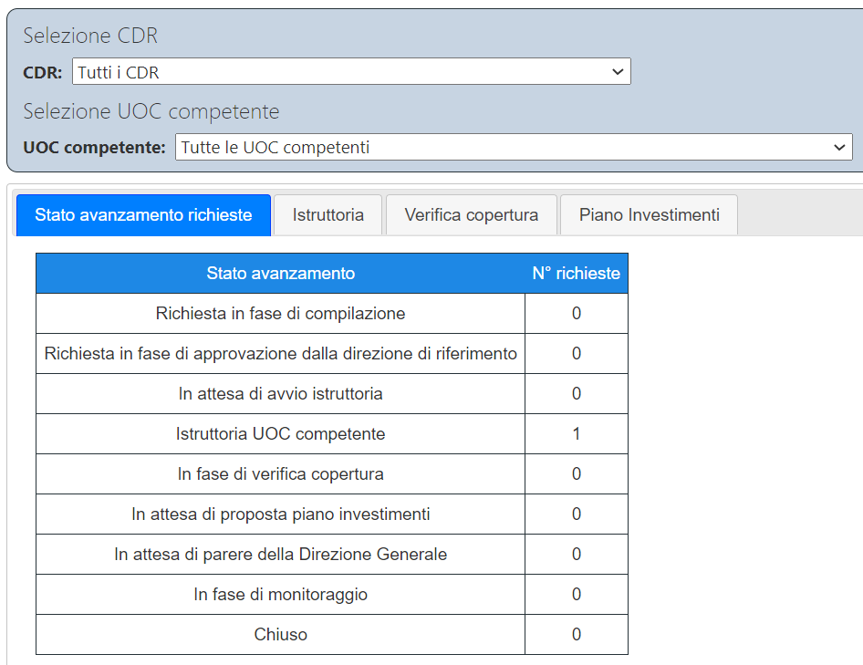
- Istruttoria: una sezione sintetica che rappresenta per fonte di finanziamento e categoria di investimento gli importi stimati dalle UOC competenti in fase di istruttoria. La sintesi riporta inoltre per fonte di finanziamento:
- Totale Fonte Finanziamento
- Budget Fonte Finanziamento
- Erosione Fonte Finanziamento
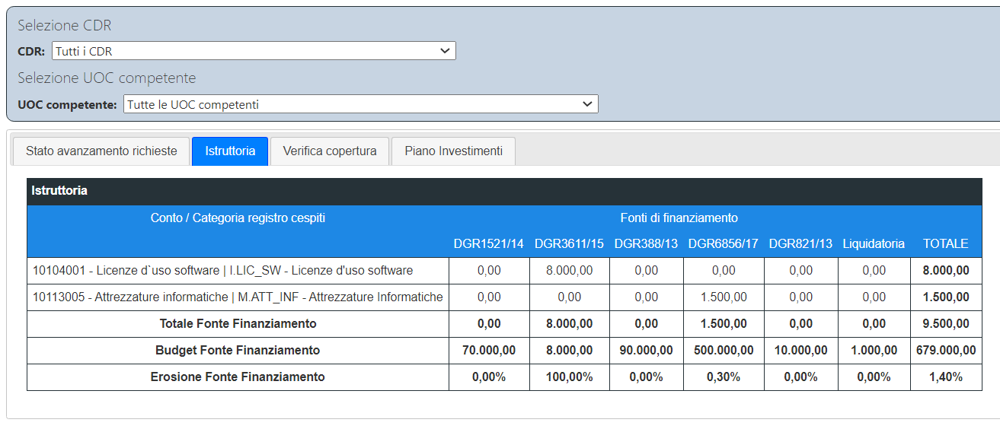
- Verifica Copertura: sezione sintetica che rappresenta per fonte di finanziamento e categoria di investimento gli importi validati dalla UOC Bilancio che conferma o meno la fonte di finanziamento da utilizzare e la categoria registro cespiti effettiva. In tale sezione potranno essere rintracciate le modifiche tra la fase di verifica copertura e quella precedente di istruttoria.
- Piano investimenti: All'interno della quale il report di cui alla sezione precedente viene aggiornato sulla base dell'effettiva attuazione del piano con gli importi a consuntivo effettivamente sostenuti per l'acquisizione dell'investimento.
Amministratore CDG
L’utente “Amministratore CDG” potrà:
- Definire i CDR abilitati alla visualizzazione della Scheda “Piano degli Investimenti” ed all’inserimento delle richieste di investimento;
- accedere (attraverso selezione dell’utente) a tutte le sezioni in uso per ciascuno degli utenti della scheda;
- effettuare estrazioni in formato excel dell’elenco richieste con un tracciato completo di tutte le informazioni inserite;
- modificare/aggiungere/eliminare le tabelle utilizzate per la creazione dei menu a tendina disponibili all’interno delle diverse sezioni della scheda;
- modificare/aggiungere/eliminare la tabella di collegamento tra Categoria Richiesta e UOC competente.
- Modificare le date di chiusura/avvio delle diverse fasi per la singola richiesta al fine di consentire la revisione della richiesta o dei singoli pareri inseriti.